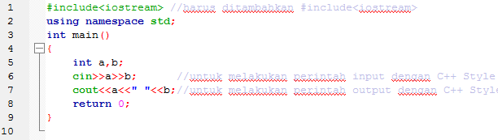

<!DOCTYPE html><html><head><meta charset="utf-8"><meta name="viewport" content="width=device-width, initial-scale=1, maximum-scale=1"><title>Tugas Proyek Teknologi Kolaborasi Perangkat Lunak</title><link rel="stylesheet" type="text/css" href="bower_components/prism/themes/prism.css"><link rel="stylesheet" type="text/css" href="bower_components/todc-bootstrap-main/dist/css/bootstrap.min.css"><link rel="stylesheet" type="text/css" href="styles/main-presentation.css"></head><body></body></html><!DOCTYPE html><html><head><meta charset="utf-8"><meta name="viewport" content="width=device-width, initial-scale=1, maximum-scale=1"><title>Tugas Proyek Teknologi Kolaborasi Perangkat Lunak</title><link rel="stylesheet" type="text/css" href="bower_components/todc-bootstrap-main/dist/css/bootstrap.min.css"><link rel="stylesheet" type="text/css" href="styles/main.css"></head><body></body></html><nav role="navigation" class="navbar navbar-default"><div class="container"><div class="navbar-header"><button type="button" data-toggle="collapse" data-target="presentation-chooser" class="navbar-toggle"><span class="sr-only"></span><span class="icon-bar"></span><span class="icon-bar"></span><span class="icon-bar"></span></button><a href="index.html" class="navbar-brand"> Tugas Proyek Teknologi Kolaborasi Perangkat Lunak	</a></div></div></nav><article id="presentation"><section><h2>Pengenalan Bahasa Pemrograman C++ Dasar</h2><h3>Created By :</h3><ul><li></li><li>Mustafa Salim</li><li>Kevin Bowie</li><li>Alvin Yaputra</li><li>Tommy</li></ul></section><section><h1>Deskripsi</h1><ul><li></li><li>Berisi Syntax-syntax dasar penggunaan bahasa pemograman C++</li><li>Penggunaan compiler yang disarankan adalah CodeBlocks</li></ul></section><section><h1>Materi Pembelajaran</h1><ul><li></li><li>:: Sintaks Dasar ::</li><li>:: Tipe Data ::</li><li>:: Percabangan ::</li><li>:: Perulangan ::</li><li>:: Array ::</li><li>:: String ::</li><li>:: Struct ::</li><li>:: Vector ::</li><li>:: Algorithm ::</li></ul></section><section><h1>Sintaks Dasar</h1><ul><li>Dalam pemrograman C++ terdapat dua style penulisan</li></ul><h3></h3><ul><li>:: C Style ::</li><li>:: C++ Style ::</li></ul></section><section><h1>C Style</h1><h2>Library yang dibutuhkan dalam penulisan "C Style" :</h2><h2>#include &#60cstdio></h2><h3></h3><ul><li>Di dalam "cstdio" terdapat beberapa fungsi :</li><li>scanf --> untuk membaca format data dari stdin</li><li>printf --> untuk menampilkan format data ke stdout</li><li>sscanf --> untuk membaca format data dari string</li><li>sprint --> untuk menulis format data ke string</li><li>dan lain sebagainya..</li></ul></section><section><h2>Contoh Penggunaan C Style</h2><h2>Hasil Keluaran</h2></section><section><h1>C++ Style</h1><h2>Library yang dibutuhkan dalam penulisan "C++ Style" :</h2><h2>#include &#60iostream></h2><h3></h3><ul><li>Di dalam "iostream" terdapat beberapa fungsi:</li><li>cin --> fungsi masukan (menyimpan data dalam suatu variabel)</li><li>cout --> fungsi keluaran (menampilkan data ataupun tulisan)</li><li>Endl --> Untuk memasuki satu baris baru / enter</li><li>Ends --> Fungsi manipulator yang untuk menambah karakter null (nilai ASCII NOL) ke deretan suatu karakter. </li></ul></section><section><h2>Contoh Penggunaan C++ Style</h2></section><section><h1>Variabel(case-sensitive)</h1><ul><li>Deklarasi variabel:</li><li>int umur;</li><li></li><li>Definisi variabel (harus setelah deklarasi):</li><li>umur = 29;</li><li></li><li>Gabungan (deklarasi dan definisi):</li><li>int umur = 29;</li></ul></section><section><h1>Lanjut sini</h1></section></article><script src="bower_components/bespoke.js/dist/bespoke.min.js"></script><script src="bower_components/bespoke-bullets/dist/bespoke-bullets.min.js"></script><script src="bower_components/bespoke-scale/dist/bespoke-scale.min.js"></script><script src="bower_components/bespoke-hash/dist/bespoke-hash.min.js"></script><script src="bower_components/bespoke-progress/dist/bespoke-progress.min.js"></script><script src="bower_components/bespoke-state/dist/bespoke-state.min.js"></script><script src="bower_components/prism/prism.js"></script><script src="bower_components/prism/components/prism-bash.min.js"></script><script src="scripts/main.js"></script><script src="bower_components/jquery/jquery.min.js"></script><script src="bower_components/todc-bootstrap-main/dist/js/bootstrap.min.js"></script>